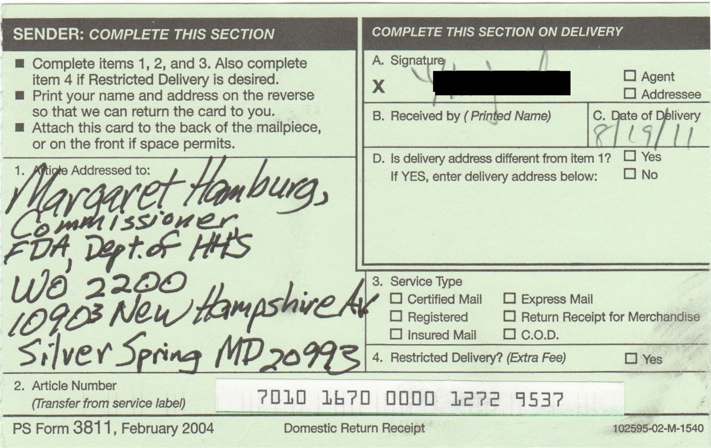
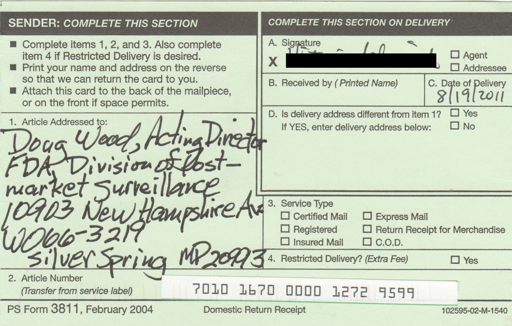
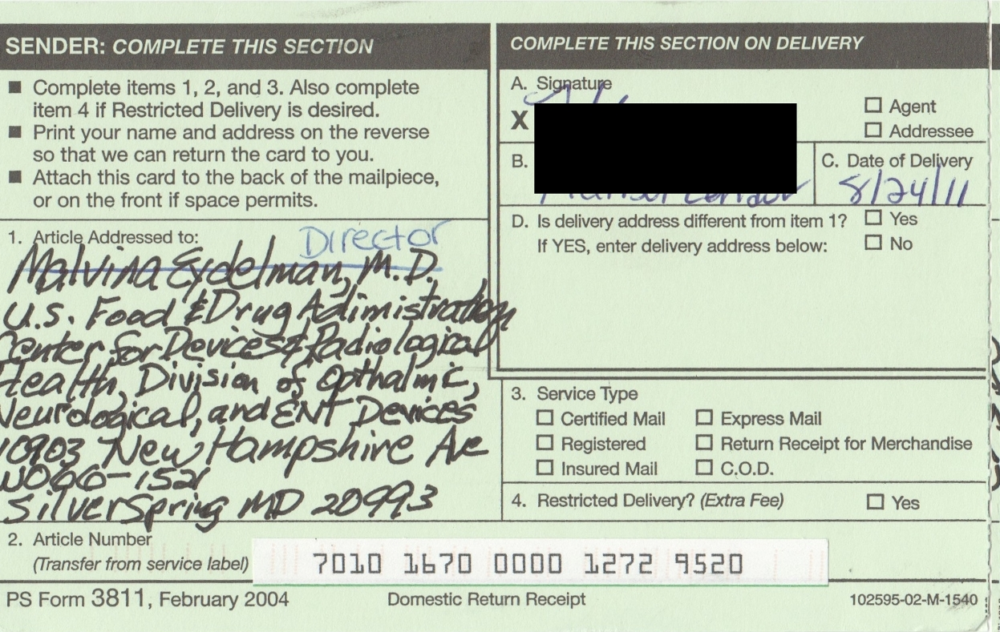
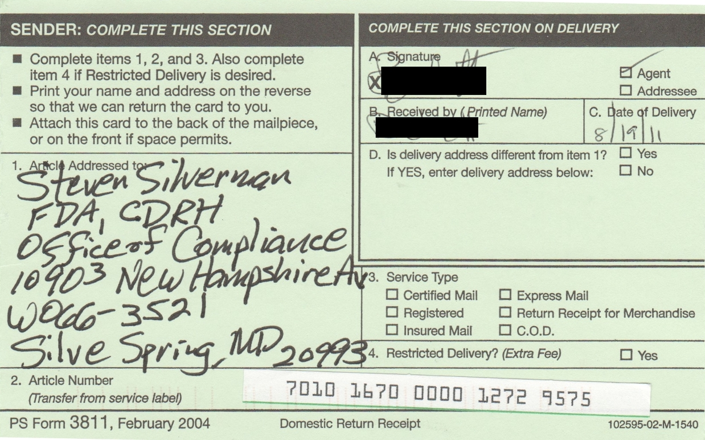

Спасибо всем, кто подписал этот Петиция ! Петиция останется открытой для новых подписей.
17 августа 42-страничный PDF-документ, содержащий первые 505 подписей, вместе с их комментариями, был отправлен заказным письмом следующим должностным лицам FDA:
Ниже приведены квитанции о возврате, подтверждающие доставку.

Маргарет А. Гамбург, доктор медицины, комиссар Управления по контролю за продуктами и лекарствами США Департамент здравоохранения и социальных служб, Нью-Гэмпшир авеню, 10903, WO 2200, Силвер-Спринг, Мэриленд, 20993

Дуг Вуд, исполняющий обязанности директора, Управление по контролю за продуктами и лекарствами США Департамент здравоохранения и социальных служб, Отдел постмаркетингового надзора, Нью-Гэмпшир авеню, 10903, WO 66-3219, Силвер-Спринг, Мэриленд, 20993

Директор Управления по контролю за продуктами и лекарствами США Департамент здравоохранения и социальных служб, Центр приборов и радиологической гигиены, отдел офтальмологического, неврологического и ЛОР-оборудования Нью-Гэмпшир авеню, 10903, WO 66-1521, Силвер-Спринг, Мэриленд, 20993

Стивен Сильверман, директор Управления по контролю за продуктами и лекарствами США Департамент здравоохранения и социальных служб, Центр по приборам и радиологической безопасности, Управление по соблюдению требований, Нью-Гэмпшир авеню, 10903, WO 66-3521, Силвер-Спринг, Мэриленд, 20993
{kind=link}
{kind=link}
{kind=link}
{kind=link}